전자산업기사 (2009-05-10 기출문제)
1과목: 전자회로
1. 다음 중 피어스 B-E형 수정 발진 회로와 가장 관계가 깊은 발진 회로는?
- 콜피츠 발진회로
- 하틀리 발진회로
- 동조형 발진회로
- 브리지형 RC 발진회로
(정답률: 67%)

2. 다음 중 FET에 대한 설명으로 적합하지 않은 것은?
- 전압제어형 트랜지스터이다.
- BJT 보다 잡음특성이 양호하다.
- BJT 보다 이득대역폭 적이 작다.
- BJT 보다 온도변화에 따른 안정성이 낮다.
(정답률: 70%)
3. 다음 중 억셉터 불순물로 사용되는 원소가 아닌 것은?
- In
- Al
- Ga
- As
(정답률: 64%)
4. 다음 중 시미트 트리거 회로에 대한 설명으로 적합하지 않은 것은?
- 출력으로 구형파를 얻을 수 있다.
- 외부 클록 펄스가 필요하다.
- 입력신호의 잡음 제거 목적으로도 입력단에 사용된다.
- 기본적인 시미트 트리거 회로는 기준전압을 가변할 수 있는 것을 제외하고는 비교기와 동일하다.
(정답률: 78%)
5. 다음과 같은 비교기 회로에서 기준전압 VR은 약 몇 [V]인가?
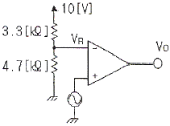
- 3.6[V]
- 4.2[V]
- 5.9[V]
- 6.5[V]
(정답률: 45%)
6. 증폭도가 -10000인 증폭기의 출력의 10[%]를 입력으로 궤환시킨다면 1[V]의 입력으로 얻어지는 출력은 약몇 [V] 인가? (단, 전원전압은 +15[V]와 -15[V]를 사용한다.)
- 10[V]
- -10[V]
- 15[V]
- -15[V]
(정답률: 64%)
7. 다음 중 연산증폭기의 응용 예로 적합하지 않은 것은?
- 능동 여파기
- RC 발진기
- 디지털 계산기
- A/D 변환기
(정답률: 81%)
8. 다음과 같은 회로에 Vi = Vm sin ωt 의 파형을 인가하였을 때 출력 파형으로 가장 적합한 것은? (단, Vm은 3[V] 보다 크다.)
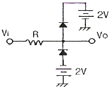
- 양단 클리퍼
- 상단 클리퍼
- AND 게이트
- 클램프 회로
(정답률: 87%)
9. 다음 중 부궤환 증폭기의 특징에 대한 설명으로 적합하지 않은 것은?
- 이득이 감소한다.
- 잡음이 감소한다.
- 주파수 대역폭이 증가한다.
- 입ㆍ출력 임피던스 값의 변화가 없다.
(정답률: 86%)
10. 단일 증폭기와 비교한 B급 푸시풀 증폭기의 특징으로 적합하지 않은 것은?
- 더 큰 출력을 얻는다.
- 효율이 더 높다.
- 전원의 맥동에 의한 잡음이 제거된다.
- 기수 고조파에 의한 일그러짐이 감소된다.
(정답률: 75%)
11. 다음 중 증폭기 구성에서 C급 증폭기의 가장 큰 장점은?
- 잡음의 감소
- 효율의 증대
- 회로 구성이 간단
- 출력 파형의 왜율 감소
(정답률: 86%)
12. 전압이득이 40[dB]인 증폭기가 5[%]의 왜율을 갖고 있을 때 왜율을 0.5[%]로 하기 위한 방법으로 가장 적합한 것은?
- 궤환율 0.9의 부궤환을 걸어준다.
- 궤환율 0.09의 부궤환을 걸어준다.
- 전압증폭율을 약 10[%] 높인다.
- 전압증폭율을 약 20[%] 줄인다.
(정답률: 62%)
13. 다음 연산증폭기 회로에서 출력 Vo를 나타내는 식으로 가장 적합한 것은?
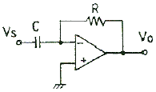
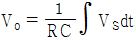
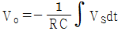
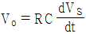
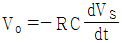
(정답률: 88%)
14. α 차단 주파수가 1000[kHz]인 트랜진스터를 이미터 접지로 사용할 때 β 차단 주파수는 몇 [kHz] 인가? (단, α = 0.98 이다.)
- 18[kHz]
- 20[kHz]
- 180[kHz]
- 200[kHz]
(정답률: 66%)
15. 다음 연산증폭기 회로의 전체 이득(Vo/Vs)은 몇 [dB]인가?
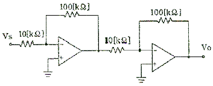
- 10[dB]
- 20[dB]
- 30[dB]
- 40[dB]
(정답률: 65%)
16. 다음의 π형 평활회로에 대한 설명으로 옳은 것은?
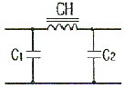
- C1, C2의 용량이 증가하면 차단주파수가 높아진다.
- CH의 인덕턴스가 증가하면 차단주파수가 높아진다.
- 일반적으로 초크 입력형보다 전압변동률이 크다.
- C1, C2의 용량이 증가하면 리플 함유율이 커진다.
(정답률: 74%)
17. 다음 중 컬렉터 접지 증폭회로에 대한 설명으로 적합하지 않은 것은?
- 이미터 플로어라 불리기도 한다.
- 전압 이득은 1보다 약간 작다.
- 입력전압과 출력전압의 위상은 역상이다.
- 입력 임피던스는 높고, 출력 임피던스는 매우 낮다.
(정답률: 61%)
18. 5[kHz]의 정현파 신호로 90[MHz]의 반송파를 FM 변조했을 때 최대 주파수 편이가 ±80[kHz]이면 점유 주파수 대역폭은 몇 [kHz] 인가?
- 80[kHz]
- 160[kHz]
- 170[kHz]
- 340[kHz]
(정답률: 50%)
19. 다음 회로에서 iL 은? (단, R1 = R2 = R3+R4 이고, 연산증폭기는 이상적이다.)
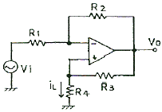
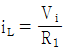
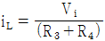
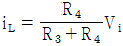
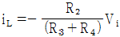
(정답률: 45%)
20. 다음 회로에서 저항 Re의 역할로서 가장 적합한 것은?
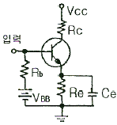
- 증폭도 증대
- 주파수대역 증대
- 바이어스 전압 감소
- 동작점의 안정화
(정답률: 85%)
2과목: 전기자기학 및 회로이론
21. 평행판콘덴서의 양극판의 면적을 3배로 하고, 간격을 1/2 로 하면 정전용량은 처음의 몇 배가 되는가?
- 3/2
- 2/3
- 4
- 6
(정답률: 61%)
22. 권선수가 N 회인 코일에 전류 I [A]를 흘릴 경우, 코일에 ø [Wb]의 자속이 지나간다면 이 코일에 저장된 자계 에너지는 어떻게 표현되는가?
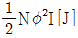
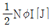
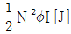
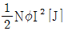
(정답률: 57%)
23. 평등자계에 수직으로 일정 속도의 전자가 입사할 때 전자의 궤적은 어떻게 되는가?
- 직선
- 포물선
- 원
- 쌍곡선
(정답률: 70%)
24. 전자계에 대한 맥스웰의 기본 이론이 아닌 것은?
- 자계의 시간적 변화에 따라 전계의 회전이 생긴다.
- 전도전류는 자계를 방생시키나, 변위전류는 자계를 발생시키지 않는다.
- 자극은 N, S극이 항상 공존한다.
- 전하에서는 전속선이 발산된다.
(정답률: 78%)
25. 전류에 의한 자계의 방향을 결정하는 법칙은?
- 렌츠의 법칙
- 플레밍의 오른손법칙
- 플레밍의 왼손법칙
- 앙페르의 오른나사법칙
(정답률: 67%)
26. 공기 중에서 1[V/m]의 전계로 2[A/m2]의 변위전류를 흐르게 하려면 주파수는 약 몇 [Hz]이어야 하는가?
- 1.8×1010
- 3.6×1010
- 5.4×1010
- 7.2×1010
(정답률: 56%)
27. 비유전율 εS = 16, 비투자율 μS = 1인 매질에서의 고유 임피던스[Ω]는?
- 30π
- 40π
- 120π
- 160π
(정답률: 45%)
28. 전류가 흐르고 있는 도체에 자계를 가하면 도체 측면에 정부(+,-)의 전하가 나타나 두 면간에 전위차가 발생하는 현상은?
- 핀치 효과
- 톰슨 효과
- 홀 효과
- 지벡 효과
(정답률: 67%)
29. 선전하 밀도가 λ[C/m]로 균일한 무한 직선 도선의 전하로부터 거리가 r[m]인 점의 전계의 세기[V/m]는?
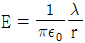
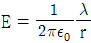
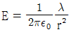
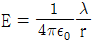
(정답률: 50%)
30. 다음 중 맥스웰의 전자 방정식이 아닌 것은?
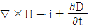
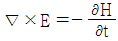
- ∇ㆍD = ρ
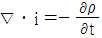
(정답률: 50%)
31. 이상변압기(ideal transformer)를 만족하는 3가지 조건이 아닌 것은?
- 코일에 관계되는 손실이 0 일 것
- 두 코일 간의 결합계수가 1 일 것
- 두 코일의 각 인덕턴스가 무한대일 것
- 단자 전압비는 권수비의 역수와 같을 것
(정답률: 83%)
32. 적분 요소와 1차 지연 요소의 전달 함수로 짝을 이룬 것은? (복원 오류로 보기 내용이 정확하지 않습니다. 내용을 아시는분께서는 오류 신고를 통하여 내용 작성부탁 드립니다. 정답은 2번입니다.)
- KS와

- 1/KS와

- (복원중)
- (복원중)
(정답률: 82%)
33. 다음 회로에서 부하 임피던스 ZL[Ω]을 얼마로 하면 최대 전력이 부하에 전달되는가?
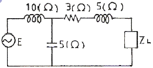
- 5 + j3
- 5 - j3
- 3 + j5
- 3 - j5
(정답률: 64%)
34. 그림과 같은 회로에서 임피던스가 주파수에 관계없이 항상 일정한 값 R로 되기 위한 조건은?
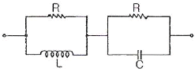
- R = L = C
- L = C
- R2 = L/C
- R2 = C/L
(정답률: 84%)
35. 무한히 긴 전송 회로의 반사 계수는?
- 0
- 0.2
- 0.3
- 1
(정답률: 85%)
36. 일정한 정현파 전류가 일정한 용량을 갖는 인덕터의 양단에 인가되고 있다. 만약, 인덕터의 인덕턴스가 증가되었을 경우 이 때의 유도전압은?
- 감소한다.
- 변화가 없다.
- 증가한다.
- 차단된다.
(정답률: 70%)
37. R-C 직렬 회로에 직류 전압을 가할 때 시정수(τ)를 표시하는 것은?
- C/R
- CR
- 1/CR
- R/C
(정답률: 90%)
38. 다음 그림과 같은 대칭 4단자 회로의 영상 임피던스는?
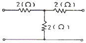
- 2[Ω]
- 3[Ω]
- 4[Ω]
- 5[Ω]
(정답률: 32%)
39. 그림과 같은 이상변압기에서 Ri = 100[Ω], RL = 400[Ω]일 때 권선비 n1 : n2는 얼마인가?
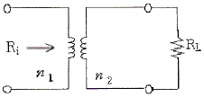
- 1:2
- 1:4
- 2:1
- 4:1
(정답률: 72%)
40. 일반적으로 f(t) = f(-t) 이라는 조건을 만족하는 경우 f(t)는 무슨 함수라고 하는가?
- 기함수
- 도함수
- 삼각함수
- 우함수
(정답률: 73%)
3과목: 전자계산기일반
41. C 언어에 대한 특징과 거리가 먼 것은?
- 간략한 표현
- 높은 이식성
- 범용 프로그래밍 언어
- 프로그램의 유연성으로 인한 프로그래머의 작업 증가
(정답률: 83%)
42. JK 플립플롭의 트리거 입력과 상태 전환 조건을 설명한 것 중 옳지 않은 것은?
- J = 0, K = 0일 때는 현재의 상태를 유지한다.
- J = 0, K = 1일 때는 0으로 된다.
- J = 1, K = 0일 때는 0으로 된다.
- J = 1, K = 1일 때는 반전된다.
(정답률: 85%)
43. 다음 중 연결이 옳지 않은 것은?
 : 판단
: 판단 : 처리
: 처리 : 준비
: 준비 : 서류(출력)
: 서류(출력)
(정답률: 59%)
44. 마이크로컴퓨터의 기본 구성에서 외부의 장치와 신호를 주고받는 요소는?
- CPU
- ALU
- I/O
- Memory
(정답률: 74%)
45. 소프트웨어 우선순위 인터럽트와 비교하여 하드웨어 우선순위 인터럽트가 갖는 특징으로 옳은 것은?
- 응답속도가 빠르다.
- 가격이 싸다.
- 유연성이 있다.
- 추가적인 하드웨어가 필요 없다.
(정답률: 59%)
46. 그림과 같은 명령 형식에서 나타낼 수 있는 명령어와 Address의 수는?
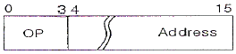
- 명령어 : 8, Address : 2048
- 명령어 : 8, Address : 4096
- 명령어 : 16, Address : 2048
- 명령어 : 16, Address : 4096
(정답률: 55%)
47. 다음 그림은 어떤 컴퓨터 구조에 해당하는가? (단, CU:control unit, PU:process unit, IS:instruction stream, DS:data stream, MM:memory module)
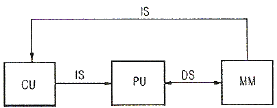
- SISD 구조
- SIMD 구조
- MISD 구조
- MIMD 구조
(정답률: 89%)
48. 제어 신호들의 연결 구조에 따른 버스 중재 방식 중 버스 요구와 승인 신호선이 각각 1개씩만 존재하는 것은?
- 중앙집중식 중재 방식
- 분산식 중재 방식
- 병렬 중재 방식
- 직렬 중재 방식
(정답률: 54%)
49. 시프트 레지스터(shift register)에 저장된 2진수가 5번 shift-left 되었다. 연산동작 완료 후의 수는 처음의 몇배가 되는가?
- 4
- 8
- 16
- 32
(정답률: 76%)
50. 계산기 설계 단계에서부터 이미 할당되어 있는 주소는?
- base address
- absolute address
- direct address
- indirect address
(정답률: 92%)
51. 마이크로컴퓨터에서 입ㆍ출력 인터페이스가 사용되지 않는 것은?
- 주기억장치
- 보조기억장치
- 입력장치
- 출력장치
(정답률: 79%)
52. 보조기억장치의 설명 중 옳지 않은 것은?
- 디스크의 표면은 섹터라고 하는 동심원 구역으로 나뉜다.
- 디스크 장치에는 고정식 디스크와 탈착식 디스크가 있다.
- 정보는 디스크 판독/기록 헤드를 가진 access arm에 의해 검색된다.
- 자기 디스크상에 저장된 모든 데이터는 임의접근이 가능하다.
(정답률: 41%)
53. 수의 표현 중 대다수의 컴퓨터가 사용하고 있는 것은?
- 1의 보수에 의한 표현
- 2의 보수에 의한 표현
- 부호와 절대값에 의한 표현
- 9의 보수에 의한 표현
(정답률: 61%)
54. 다음은 전가산기(full adder)에 대한 그림이다. 입력 A = 1, B = 0, Ci = 1 인 경우 출력 S, CO 값은?
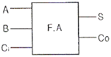
- S = 0, CO = 0
- S = 0, CO = 1
- S = 1, CO = 0
- S = 1, CO = 1
(정답률: 66%)
55. 마이크로프로세서에서 명령의 구성 중 오퍼랜드부(operand part)의 기능이 아닌 것은?
- 주기억 장치에서 데이터나 명령어의 어드레스 기억
- 보조기억 장치 내에서 데이터나 프로그램의 어드레스 기억
- 입출력 장치의 어드레스 기억
- 중앙 연산 처리 장치에서 어드레스 지시
(정답률: 48%)
56. 다음 중 집적회로(IC)의 장점이 아닌 것은?
- 가격이 싸다.
- 크기가 작다.
- 전력소비가 작다.
- 신뢰성이 낮다.
(정답률: 89%)
57. 10진수 752를 2진화 10진 코드(BCD code)로 표시하면?
- 0111 0101 0010
- 0101 1110 0000
- 0010 0111 0101
- 0100 0010 0100
(정답률: 81%)
58. 프로그램의 코딩 과정을 정확하게 설명한 것은?
- 템플리트를 이용하여 프로그램의 논리를 그리는 것
- 각 흐름도 연산을 컴퓨터 언어로 번역하는 것
- 흐름도 연산을 의사 코드로 바꾸는 것
- 기계어를 의사 코드로 바꾸는 것
(정답률: 87%)
59. 실제로 제한된 양의 주기억장치를 가지고 있지만 사용자에게 매우 커다란 주기억장치를 갖고 있는 것처럼 느끼게 하는 기억장치 운용 방식은?
- 캐시 메모리
- 세그먼트 메모리
- 가상 메모리
- 연관 메모리
(정답률: 82%)
60. 다음 중 입출력 모듈(module)의 기능에 포함되지 않는 것은?
- 데이터 버퍼링(data buffering) 기능
- 제어신호의 물리적 변환
- system의 속도 향상
- 제어신호의 논리적 변환
(정답률: 63%)
4과목: 전자계측
61. 전자력에 의한 구동 토크를 발생하는 계기로서 교류용으로 사용되는 계기는?
- 열선형
- 유도형
- 정전형
- 가동선륜형
(정답률: 78%)
62. 어떤 전원장치의 무부하시 전압이 220[V]였는데 정격부하의 전압이 180[V]가 되었다. 측정된 전압 변동률은?
- 22.2[%]
- 18.6[%]
- 16.6[%]
- 11.2[%]
(정답률: 83%)
63. 다음 중 지시 계기에서 제어 장치에 해당하는 것은?
- 스프링 제어
- 와류 제어
- 액체 제어
- 공기 제어
(정답률: 71%)
64. 그림의 회로에서 a, b 양단의 전압을 측정하니 V 볼트였다. 부하저항 R 값은? (단, E : 전지전압, r : 전지내부저항)
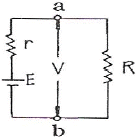
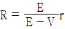
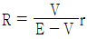
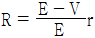
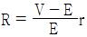
(정답률: 69%)
65. 물리량(전압, 전류 등)의 크기를 숫자로 바꾸는 장치는?
- A-D 변환기
- DC-AC 변환기
- D-A 변환기
- AC-DC 변환기
(정답률: 79%)
66. 그림과 같은 교류 브리지가 평형 되었을 때 L의 값은?
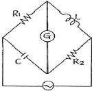
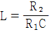
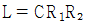
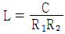
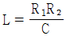
(정답률: 76%)
67. 오실로스코프에서 위상차를 측정한 결과 그림과 같은 리서쥬 도형이 나타났다. 다음 관계식 중 옳은 것은?
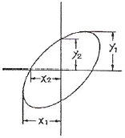
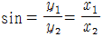
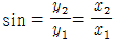
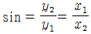
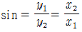
(정답률: 84%)
68. 60[Hz]의 전압을 오실로스코프로 측정할 때 주기는 약 얼마인가?
- 60[sec]
- 1[sec]
- 16.6[msec]
- 60[msec]
(정답률: 84%)
69. 신호의 에너지와 전압을 주파수의 함수로 정보를 제공하는 실시간 분석기는?
- 스펙트럼 분석기
- 스위프 신호발생기
- 고조파 왜율 분석기
- 디지털 스토리지 스코프
(정답률: 76%)
70. 최대 눈금 250[V]인 0.5급 전압계로 어떤 전압을 측정하였더니 지시가 100[V]이었다. 상대 오차는?
- 0.5[%]
- 1.25[%]
- 2.0[%]
- 2.25[%]
(정답률: 95%)
71. 다음 중 Q-meter에 사용하는 전류계는?
- 열전대형
- 가동철편형
- 전류력계형
- 유도형
(정답률: 65%)
72. 직류전압계를 사용하여 동작중인 회로의 직류 전압을 측정하고자 한다. 이 때 사용되는 직류 전압계는 다음중 어떠한 조건을 갖고 있으면 좋겠는가?
- 내부저항이 가급적 클수록 좋다.
- 내부저항이 가급적 작을수록 좋다.
- 계기의 측정오차 범위가 지정되어 있으므로 내부저항은 별로 상관없다.
- 직류 전압만 측정하면 되므로 전압계의 내부 정전 용량의 대소에는 상관이 없다.
(정답률: 69%)
73. 계수형 주파수계의 확도에 가장 영향을 주는 것은?
- 지시관의 특성
- 전원 전압의 변동
- 게이트(gate) 회로
- 기준 클럭(clock) 발진기
(정답률: 67%)
74. 표준 저항기 재료의 구비 조건으로 옳지 않은 것은?
- 저항이 안정할 것
- 고유 저항이 클 것
- 온도 계수가 적을 것
- 구리에 대한 열기전력이 클 것
(정답률: 85%)
75. 소인(Sweep) 발진기의 설명 중 옳은 것은?
- 부성저항을 이용한 발진기
- 사이나트론에 의한 발진기
- 트랜지스터의 접합 용량을 이용한 발진기
- 발진주파수가 주기적인 변화를 갖는 발진기
(정답률: 62%)
76. 교류 100[Vrms] 전압을 오실로스코프로 측정했을 때 이 교류의 첨두치(peak to peak) 전압은 약 몇 [V] 인가?
- 100
- 141
- 200
- 282
(정답률: 70%)
77. 다음 중 Q-meter로 측정할 수 없는 것은?
- 공진 주파수
- 콘덴서의 정전용량
- Coil의 분포용량
- Coil의 실효저항
(정답률: 80%)
78. 다음 중 회로 전류 측정 방법으로서 적합하지 않은 것은?
- 도선 외착형(導線 外着型) 측정 프로브(probe) 사용
- 직렬로 저저항 삽입, 전압 강하 독출법
- 전류계를 직렬로 넣는다.
- 전류계를 병렬로 넣는다.
(정답률: 80%)
79. 다음 저항 감쇠기 중 평형형은?
- L 형
- T 형
- H 형
- π 형
(정답률: 66%)
80. 다음 중 코일의 인덕턴스를 측정하는데 사용되는 브리지는?
- 맥스웰 브리지
- 윈 브리지
- 휘스톤 브리지
- 헤이 브리지
(정답률: 85%)